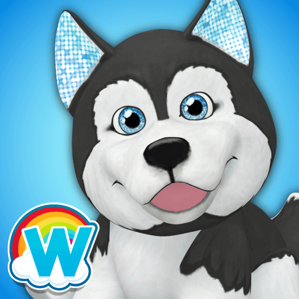

 Webkinz
Details
 |
|
| Playtime | Not Played |
| Last Activity | Never |
| Added | 4/24/2025 1:30:35 |
| Modified | 5/1/2025 23:34:03 |
| Completion Status | Not Played |
| Library | Xbox |
| Source | Xbox |
| Platform | $PC (Windows) |
| Release Date | 6/19/2020 |
| Community Score | |
| Critic Score | |
| User Score | |
| Genre | Arcade Building Life sim Mini-games MMO |
| Developer | Ganz |
| Publisher | Ganz Canada |
| Feature | Multiplayer Touchscreen optimised |
| Links | PCGamingWiki Official site IGDB |
| Tag | Cartoon Fantasy Isometric Persistent Point and select Unity 2022 |
Description
Webkinz is a stuffed animal and video game franchise by the Canadian toy company Ganz. Webkinz stuffed animals have online counterparts in the video games Webkinz Classic and Webkinz Next. It was originally released by Ganz on April 15, 2005. However, Webkinz Day (the anniversary of Webkinz) is celebrated annually on April 29 annually because the creator, Karl Borst, did not want it to be so close to Easter.
Each Webkinz toy has an attached tag with a unique "secret code" printed on it, allowing its owner to play with a digital version of their pet on iOS, Android, and desktop computers. Sales of Webkinz plush toys are limited to the United States and Canada, but international users can buy virtual pets from the Ganz eStore. Plush toys made after October 2020 contain two secret codes for Webkinz Classic and Webkinz Next, respectively.
In 2006, Webkinz Classic achieved one million concurrent players. During this same year, according to one estimate published in Wired, Webkinz generated approximately $100 million in revenue. Ganz updated Webkinz Classic in 2015 to Webkinz X, a version that created a safer environment for young players.[citation needed] In October 2020, Ganz unveiled Webkinz Next, a 3D spin-off with different social features.
Game development
Karl Borst, the creative director of Webkinz, had the idea to link the new plush toy line to an online site, and later to a virtual world. Originally, the pet avatars were designed to be three-dimensional, but this was later replaced with cartoony pet designs, due to the difficulty of animating such a large variety of pets while including cute and expressive features.
After the site’s premiere in 2005, users could register the code on the tag of their plush toys, and play games with the virtual version of their adopted Webkinz pet. The original site had among its features a few games in the arcade section, the “W-Shop” where users could use their in-game points for virtual items, and the ability to customize the pets’ rooms, but many more interactive features have been added to Webkinz World since, including a school (called the “Kinzville Academy”) where users can play minigames which improve their pets’ abilities, and a trivia section where users can earn points for answering questions.
In 2015, a decade after the site’s launch, Ganz introduced a major update to the game (called Webkinz X), which had been failing due to certain technical errors in the coding. Webkinz X improved many of these problems, but also created many more, as the unique mixture of new code and code as old as 2005 resulted in several hundred in-game objects disappearing, or otherwise not functioning properly; the animation joints of some Webkinz avatars also were affected, often resulting in an awkward and disjointed appearance.
The Webkinz World site was run by Adobe Flash, and in 2018, in accordance with Adobe’s decision to no longer support Flash Player, Ganz worked with Adobe to convert the entire game interface from an embedded Flash Player-driven web game into a desktop app, which can be downloaded directly from the Webkinz website.
Types of Webkinz
Webkinz are modeled after real pets and animals, as well as prehistoric animals and mythical creatures. Along with the regular Webkinz toys, there are also smaller, less expensive versions called Lil’ Kinz, as well as larger, more expensive versions in the Signature collection, which ran from April 2009 to December 2013. Lil’ Kinz unlock the same virtual items as a regular-size Webkinz, but feature a smaller in-game avatar.
The Webkinz Signatures were designed by a different toy company which had partnered with Ganz, and included three different sub-lines of plush: Webkinz Signature, Webkinz Small Signature, and Webkinz Signature Endangered, the latter being based on real-life endangered species of animals, and unlocking a trivia section about the respective animal; purchasing a Signature also unlocked access to a virtual item from the Signature theme. Production of Signatures stopped when the contract Ganz held ended, and new Signature plushes were not made, in part to their steeper price. Ganz continues to release new Signature pets, albeit without their plush counterparts, with certain pets only available as special promotional items; virtual Signatures and other pets given away in this manner often run for an extremely steep price, ranging from $25 per code on third-party sites such as eBay, to $2,000 per code (including several other virtual promotional items), when acquired through the Ganz eStore website itself.
In May 2009, the Birthstone Pets series was released, with one new virtual Birthstone Pet (a brightly-colored dog with the corresponding birthstone on its hip) being released for each corresponding month. In April 2010, Ganz replaced the Birthstone Pets series with the Zodiac Pets series. Similarly, one Zodiac Pet was released every month, and were limited to just digital avatars, with no plush being made available; however, there was greater variety in the types of animals offered, not comprising only dogs as in the Birthstone Pets series, but including an eagle, a snake, a horse, a crab, and even a butterfly.
In 2011, the CandyKinz series was released, which was originally composed of virtual-only pets with various dessert-related themes. Later, plush versions of some of the CandyKinz were made available, such as the Gingerbread Puppy. In June 2012, the Rockerz Pets series was released, which consisted of rock band-themed pets. The purchase of a plush toy unlocked a virtual pet and a virtual item from the Rockerz theme, in a similar manner as the Webkinz Signatures. Some later Rockerz pets were only available as digital avatars.
In 2019, Ganz announced that the “first generation” of Webkinz plush was ending and that no new plush pets would be released for the time being, but fully virtual pets would still be created and available to purchase. In November 2020, Ganz resumed the creation of plush Webkinz toys for the spin-off game Webkinz Next. New pets include a code for Webkinz Classic and a code for Webkinz Next.
Gameplay
Each Webkinz stuffed animal and Webkinz accessory comes with an 8-character code, within a tag tied onto the plush. By registering this code on the Webkinz Classic desktop application or mobile app, the customer "adopts" a pet in the virtual Webkinz World. Without the code, the user will not get access to the full Webkinz World, but they can create a free account. On January 19, 2011, Ganz announced that Webkinz World accounts would no longer expire, meaning users would not have to buy a new pet each year to renew their account. However, certain features become inaccessible for accounts that have not registered a new pet for over a year, and accounts without active users are deleted after a certain period of time.
All inactive accounts were once stored to later be unarchived upon retrieval, but it was announced by Ganz, that on Oct. 1, 2019, all archived accounts would be deleted after seven years of inactivity, due to storage issues, and a change in children’s online privacy laws. No new accounts were archived, and users with free accounts which had been abandoned for more than six months would be deleted.
The Webkinz World is an online play area with its economy controlled by Ganz. The user can earn money (called KinzCash) by adopting new pets, playing online games, answering general knowledge questions, and through daily activities like spinning the Wheel of WOW, playing Wishing Well 2, or completing jobs (minigames) available once every 8 hours. Each day, there is a Game of the Day which can be played for bonus KinzCash, and other bonuses are available each hour, full days on weekends, and afternoons only on weekdays. With each Webkinz toy purchased, more KinzCash, rooms, and items are added to the user's account.
Many of the tasks in Webkinz World involve collecting items. For example, recipes are released for the players through cookbooks, or (formerly) one of the in-game TV shows called The Secret Chef. "Gems" can be mined once a day at the Curio Shop, with a full set of gems being turned into the Webkinz Crown of Wonder and used to buy exclusive items. A similar feature, called Alyssa's Star Challenge, involves users clicking on colored stars to find valuable stars.
The online world also contains many rare or exclusive items. Some of these items require developing a friendship with the Curio Shop owner to purchase, while others are obtained by registering other Webkinz accessories purchased in the real world. Each type of pet gets a special item, and food available exclusively for them. A "Pet of the Month" is announced at the beginning of each month. Users with the Pet of the Month on their account can participate in special minigames and rewards; if a person registers the announced pet in that month, they will also receive other exclusive items.
Criticism
- Parents have raised concerns regarding children’s use and potential overuse of the Webkinz toys.
- Some parents have voiced concerns about the website’s online chat system.[citation needed] The chat systems, known as KinzChat and KinzChat Plus, respectively, have various safety precautions; these include placing restrictions on who can send messages, disallowing users to type numbers or certain words, and banning certain users from speaking (KinzChat Plus), and opting for a “safe-chat” system wherein users can only post pre-written phrases from a list (regular KinzChat).
- Some schools have expressed concern about the toys becoming a distraction from education. This has occasionally resulted in Webkinz being banned from school grounds. However, Webkinz World also features several educational games, including jigsaw puzzles, critical thinking games, word games, and trivia about the real world.
- Some users had voiced criticism when the once advertisement-free site began displaying advertisements, previously only for their additional game-related products, but now also for movies, such as Alvin and the Chipmunks and Bee Movie. Due to this, an option for members to block advertisements promoting content that is not sponsored by or affiliated with Webkinz or Ganz had been created. However, if enabled, this option could not be changed until 30 days had passed. [citation needed]
- In 2007, rumors spread about a character that would kill Webkinz on the site, supposedly inserted by a disgruntled employee or a rival site. These claims were proven false.
- Users criticized the platform's technical issues and glitches, particularly during periods of high traffic. Users have also reported slow loading times, unexpected logouts, and missing items, leading to frustration among both players and parents.
2020 data breach
In April 2020, a hacker gained access to the login information of almost 23 million players, which was later leaked. As a response to this, Ganz later strengthened their encryption and required all Webkinz users to reset their passwords.